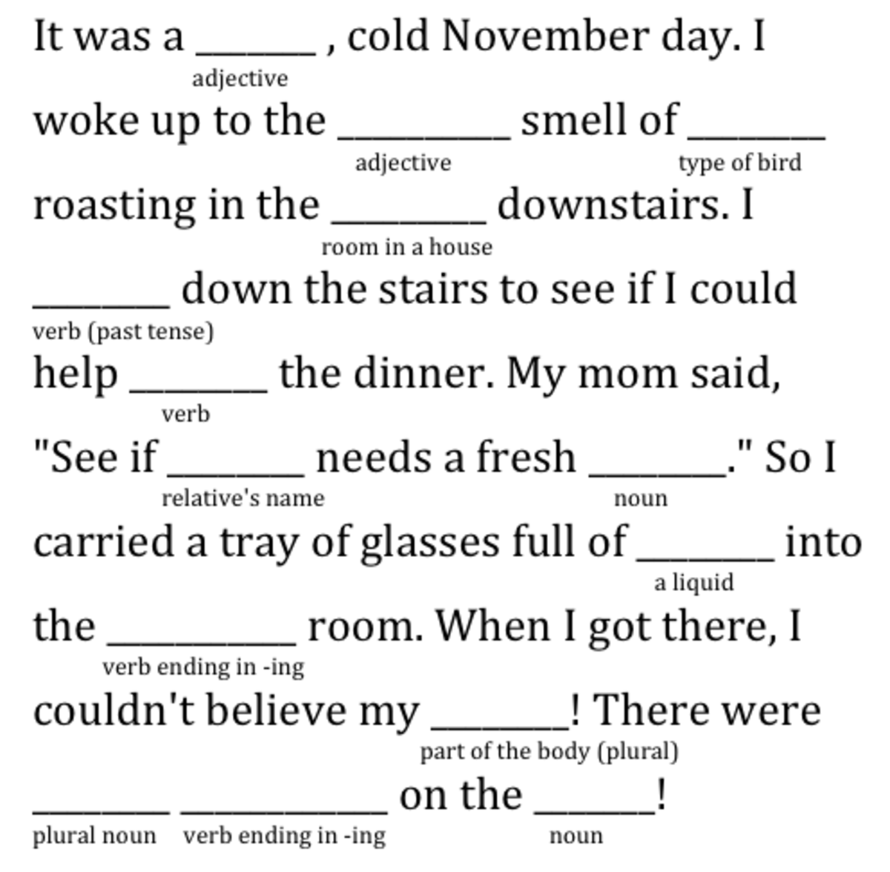

Python Libraries (Scikit-Learn, Pandas, Matplotlib, NumPy, TensorFlow, Keras, Seaborn),
Machine Learning, Git & GitHub, SQL, Benchling, AWS, Docker, Big Data Ecosystem, Big O Notation
I am a enthusiastic data scientist with degrees in BEng. Aquatic Sciences Engineering, BSc. Business Management and AS. Computer Technologies.
In addition to this I have transferable skills from 5 years of work experience.
I am a proactive individual who pays attention to details. I collaborate with people from different cultural and professional backgrounds and value teamwork. I speak English and Turkish.
I have a passion for coding and learning. I like cleaning data, doing analysis and tuning models. My goal is to learn more about data science and improve my skills.
I am currently eligible for a Data Scientist or Python Developer role.
I am a British citizen, I have no visa problem. I am willing to move for suitable job opportunity.

In this Customer Churn Project, detailed customer analyzes were made and customer churn was estimated using Decision Tree and Random Forest Models.
In this Unsupervised Machine Learning Project, customers determined using the Hierarchical Clustering Model created with the Sklearn library were divided into 4 targeted segments.
In this Supervised Machine Learning Project, it is aimed to create a model to estimate mortality caused by Heart Failure by using the Artificial Neural Network Model.
Libraries: Tensorflow, Imblearn, Sklearn, Pandas, Matplotlib, Seaborn, Numpy

The aim of this study is to test 6 different models and determine the best model for survival prediction on the Titanic.
Models: Logistic Regression, Gaussian Naive Bayes, Bernoulli Naive Bayes, Decision Tree, Support Vector Machines, Linear Regression
In this study, Flight Take Off Data from JFK Airport dated Nov 2019-December 2020 was examined and Linear Regression Model was applied.
Using the Numpy, Pandas and Matplotlib libraries, the latitude and longitudinal points of the earthquakes that occurred on 17 April and 17 May 2023 are shown on the graph.
It is an adventure game made according to the user's preferences. Let's see if you can escape from where you started in a room full of dragons and return to your life.

In this game user has to enter substitutes for blanks in the story without knowing the story. It will be fun to read aloud the story after filling the blanks.